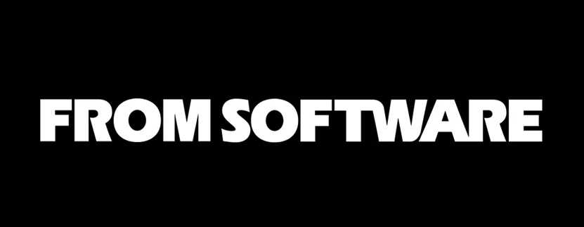

Fromsoftware
Fromsoftware é uma empresa desenvolvedora de jogos digitais, muitos de seus jogos obtiveram grande sucesso, mas como toda desenvolvedora muitos deles também são obscuros.
Seus jogos incluem Demon's Souls, a série Dark Souls, o spinoff Bloodborne, Sekiro, Elden Ring.
Mas também incluem a série Armored Core, a série King's Field, e outros jogos menos notáveis.
Seus jogos modernos geralmente seguem a mesma fórmula de gameplay, com o melhor level design no mercado, e desafios de tirar o cabelo.
O motivo dessa filosofia de design é por causa do diretor da maioria desses jogos, Hidetaka Miyasaki, sua filosofia trouxe a série Souls à tona para o mainstream, causando um grande boom na empresa.
